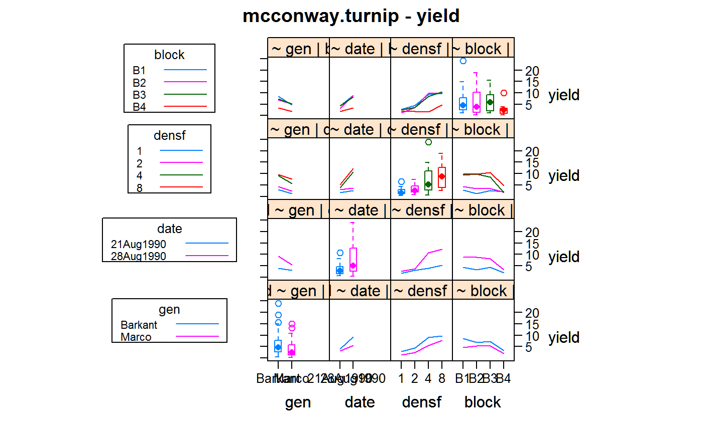

mcconway.turnip.RdRCB experiment of turnips, 2 treatments for planting date and density
A data frame with 64 observations on the following 6 variables.
gengenotype
dateplanting date, levels 21Aug1990 28Aug1990
densityplanting density, 1, 2, 4, 8 kg/ha
blockblock, 4 levels
yieldyield
This is a randomized block experiment with 16 treatments allocated at random to each of four blocks. The 16 treatments were combinations of two varieties, two planting dates, and four densities.
Lee et al (2008) proposed an analysis using mixed models with changing treatment variances.
Piepho (2009) proposed an ordinary ANOVA using transformed data.
Statistical Modelling Using Genstat, K. J. McConway, M. C. Jones, P. C. Taylor.
Used with permission of Kevin McConway.
Michael Berthold, D. J. Hand. Intelligent data analysis: an introduction, 1998. Pages 75--82.
Lee, C.J. and O Donnell, M. and O Neill, M. (2008). Statistical analysis of field trials with changing treatment variance. Agronomy Journal, 100, 484--489.
Piepho, H.P. (2009), Data transformation in statistical analysis of field trials with changing treatment variance. Agronomy Journal, 101, 865--869.
library(agridat) data(mcconway.turnip) dat <- mcconway.turnip dat$densf <- factor(dat$density) # Table 2 of Lee et al. m0 <- aov( yield ~ gen * densf * date + block, dat ) summary(m0)#> Df Sum Sq Mean Sq F value Pr(>F) #> gen 1 84.0 83.95 8.753 0.00491 ** #> densf 3 470.4 156.79 16.347 2.51e-07 *** #> date 1 233.7 233.71 24.367 1.14e-05 *** #> block 3 163.7 54.58 5.690 0.00216 ** #> gen:densf 3 8.6 2.88 0.301 0.82485 #> gen:date 1 36.5 36.45 3.800 0.05749 . #> densf:date 3 154.8 51.60 5.380 0.00299 ** #> gen:densf:date 3 18.0 6.00 0.626 0.60224 #> Residuals 45 431.6 9.59 #> --- #> Signif. codes: 0 '***' 0.001 '**' 0.01 '*' 0.05 '.' 0.1 ' ' 1## Df Sum Sq Mean Sq F value Pr(>F) ## gen 1 84.0 83.95 8.753 0.00491 ** ## densf 3 470.4 156.79 16.347 2.51e-07 *** ## date 1 233.7 233.71 24.367 1.14e-05 *** ## block 3 163.7 54.58 5.690 0.00216 ** ## gen:densf 3 8.6 2.88 0.301 0.82485 ## gen:date 1 36.5 36.45 3.800 0.05749 . ## densf:date 3 154.8 51.60 5.380 0.00299 ** ## gen:densf:date 3 18.0 6.00 0.626 0.60224 ## Residuals 45 431.6 9.59 ## --- ## Signif. codes: 0 '***' 0.001 '**' 0.01 '*' 0.05 '.' 0.1 ' ' 1 # Boxplots suggest heteroskedasticity for date, density libs("HH") interaction2wt(yield ~ gen + date + densf +block, dat, x.between=0, y.between=0, main="mcconway.turnip - yield")libs(nlme) # Random block model m1 <- lme(yield ~ gen * date * densf, random= ~1|block, data=dat) summary(m1)#> Linear mixed-effects model fit by REML #> Data: dat #> AIC BIC logLik #> 308.1365 341.8181 -136.0683 #> #> Random effects: #> Formula: ~1 | block #> (Intercept) Residual #> StdDev: 1.676819 3.096991 #> #> Fixed effects: yield ~ gen * date * densf #> Value Std.Error DF t-value p-value #> (Intercept) 2.275 1.760900 45 1.2919531 0.2030 #> genMarco -1.025 2.189903 45 -0.4680573 0.6420 #> date28Aug1990 1.325 2.189903 45 0.6050496 0.5482 #> densf2 1.550 2.189903 45 0.7077939 0.4827 #> densf4 1.875 2.189903 45 0.8562023 0.3964 #> densf8 2.900 2.189903 45 1.3242595 0.1921 #> genMarco:date28Aug1990 -1.150 3.096991 45 -0.3713282 0.7121 #> genMarco:densf2 -0.600 3.096991 45 -0.1937365 0.8473 #> genMarco:densf4 0.550 3.096991 45 0.1775918 0.8598 #> genMarco:densf8 1.025 3.096991 45 0.3309665 0.7422 #> date28Aug1990:densf2 -0.175 3.096991 45 -0.0565065 0.9552 #> date28Aug1990:densf4 8.550 3.096991 45 2.7607446 0.0083 #> date28Aug1990:densf8 7.650 3.096991 45 2.4701399 0.0174 #> genMarco:date28Aug1990:densf2 0.200 4.379806 45 0.0456641 0.9638 #> genMarco:date28Aug1990:densf4 -4.950 4.379806 45 -1.1301870 0.2644 #> genMarco:date28Aug1990:densf8 -2.725 4.379806 45 -0.6221737 0.5370 #> Correlation: #> (Intr) genMrc dt28A1990 densf2 densf4 densf8 #> genMarco -0.622 #> date28Aug1990 -0.622 0.500 #> densf2 -0.622 0.500 0.500 #> densf4 -0.622 0.500 0.500 0.500 #> densf8 -0.622 0.500 0.500 0.500 0.500 #> genMarco:date28Aug1990 0.440 -0.707 -0.707 -0.354 -0.354 -0.354 #> genMarco:densf2 0.440 -0.707 -0.354 -0.707 -0.354 -0.354 #> genMarco:densf4 0.440 -0.707 -0.354 -0.354 -0.707 -0.354 #> genMarco:densf8 0.440 -0.707 -0.354 -0.354 -0.354 -0.707 #> date28Aug1990:densf2 0.440 -0.354 -0.707 -0.707 -0.354 -0.354 #> date28Aug1990:densf4 0.440 -0.354 -0.707 -0.354 -0.707 -0.354 #> date28Aug1990:densf8 0.440 -0.354 -0.707 -0.354 -0.354 -0.707 #> genMarco:date28Aug1990:densf2 -0.311 0.500 0.500 0.500 0.250 0.250 #> genMarco:date28Aug1990:densf4 -0.311 0.500 0.500 0.250 0.500 0.250 #> genMarco:date28Aug1990:densf8 -0.311 0.500 0.500 0.250 0.250 0.500 #> gnM:28A1990 gnMr:2 gnMr:4 gnMr:8 d28A1990:2 #> genMarco #> date28Aug1990 #> densf2 #> densf4 #> densf8 #> genMarco:date28Aug1990 #> genMarco:densf2 0.500 #> genMarco:densf4 0.500 0.500 #> genMarco:densf8 0.500 0.500 0.500 #> date28Aug1990:densf2 0.500 0.500 0.250 0.250 #> date28Aug1990:densf4 0.500 0.250 0.500 0.250 0.500 #> date28Aug1990:densf8 0.500 0.250 0.250 0.500 0.500 #> genMarco:date28Aug1990:densf2 -0.707 -0.707 -0.354 -0.354 -0.707 #> genMarco:date28Aug1990:densf4 -0.707 -0.354 -0.707 -0.354 -0.354 #> genMarco:date28Aug1990:densf8 -0.707 -0.354 -0.354 -0.707 -0.354 #> d28A1990:4 d28A1990:8 gM:28A1990:2 gM:28A1990:4 #> genMarco #> date28Aug1990 #> densf2 #> densf4 #> densf8 #> genMarco:date28Aug1990 #> genMarco:densf2 #> genMarco:densf4 #> genMarco:densf8 #> date28Aug1990:densf2 #> date28Aug1990:densf4 #> date28Aug1990:densf8 0.500 #> genMarco:date28Aug1990:densf2 -0.354 -0.354 #> genMarco:date28Aug1990:densf4 -0.707 -0.354 0.500 #> genMarco:date28Aug1990:densf8 -0.354 -0.707 0.500 0.500 #> #> Standardized Within-Group Residuals: #> Min Q1 Med Q3 Max #> -2.95673473 -0.47103959 -0.08756561 0.45826905 2.90356710 #> #> Number of Observations: 64 #> Number of Groups: 4anova(m1)#> numDF denDF F-value p-value #> (Intercept) 1 45 33.89726 <.0001 #> gen 1 45 8.75282 0.0049 #> date 1 45 24.36650 <.0001 #> densf 3 45 16.34730 <.0001 #> gen:date 1 45 3.80045 0.0575 #> gen:densf 3 45 0.30050 0.8248 #> date:densf 3 45 5.37960 0.0030 #> gen:date:densf 3 45 0.62554 0.6022# Multiplicative variance model over densities and dates m2 <- update(m1, weights=varComb(varIdent(form=~1|densf), varIdent(form=~1|date))) summary(m2)#> Linear mixed-effects model fit by REML #> Data: dat #> AIC BIC logLik #> 294.2643 335.4307 -125.1322 #> #> Random effects: #> Formula: ~1 | block #> (Intercept) Residual #> StdDev: 0.4004249 1.014646 #> #> Combination of variance functions: #> Structure: Different standard deviations per stratum #> Formula: ~1 | densf #> Parameter estimates: #> 1 2 4 8 #> 1.000000 1.481556 3.237435 2.771912 #> Structure: Different standard deviations per stratum #> Formula: ~1 | date #> Parameter estimates: #> 21Aug1990 28Aug1990 #> 1.000000 1.747335 #> Fixed effects: yield ~ gen * date * densf #> Value Std.Error DF t-value p-value #> (Intercept) 2.275 0.545401 45 4.171245 0.0001 #> genMarco -1.025 0.717463 45 -1.428644 0.1600 #> date28Aug1990 1.325 1.021369 45 1.297278 0.2011 #> densf2 1.550 0.906819 45 1.709271 0.0943 #> densf4 1.875 1.718994 45 1.090754 0.2812 #> densf8 2.900 1.494969 45 1.939840 0.0587 #> genMarco:date28Aug1990 -1.150 1.444434 45 -0.796160 0.4301 #> genMarco:densf2 -0.600 1.282436 45 -0.467860 0.6421 #> genMarco:densf4 0.550 2.431025 45 0.226242 0.8220 #> genMarco:densf8 1.025 2.114205 45 0.484816 0.6302 #> date28Aug1990:densf2 -0.175 1.825655 45 -0.095856 0.9241 #> date28Aug1990:densf4 8.550 3.460766 45 2.470551 0.0173 #> date28Aug1990:densf8 7.650 3.009747 45 2.541742 0.0145 #> genMarco:date28Aug1990:densf2 0.200 2.581866 45 0.077463 0.9386 #> genMarco:date28Aug1990:densf4 -4.950 4.894263 45 -1.011388 0.3172 #> genMarco:date28Aug1990:densf8 -2.725 4.256425 45 -0.640209 0.5253 #> Correlation: #> (Intr) genMrc dt28A1990 densf2 densf4 densf8 #> genMarco -0.658 #> date28Aug1990 -0.462 0.351 #> densf2 -0.520 0.396 0.278 #> densf4 -0.275 0.209 0.147 0.165 #> densf8 -0.316 0.240 0.169 0.190 0.100 #> genMarco:date28Aug1990 0.327 -0.497 -0.707 -0.196 -0.104 -0.119 #> genMarco:densf2 0.368 -0.559 -0.196 -0.707 -0.117 -0.134 #> genMarco:densf4 0.194 -0.295 -0.104 -0.117 -0.707 -0.071 #> genMarco:densf8 0.223 -0.339 -0.119 -0.134 -0.071 -0.707 #> date28Aug1990:densf2 0.258 -0.196 -0.559 -0.497 -0.082 -0.094 #> date28Aug1990:densf4 0.136 -0.104 -0.295 -0.082 -0.497 -0.050 #> date28Aug1990:densf8 0.157 -0.119 -0.339 -0.094 -0.050 -0.497 #> genMarco:date28Aug1990:densf2 -0.183 0.278 0.396 0.351 0.058 0.067 #> genMarco:date28Aug1990:densf4 -0.096 0.147 0.209 0.058 0.351 0.035 #> genMarco:date28Aug1990:densf8 -0.111 0.169 0.240 0.067 0.035 0.351 #> gnM:28A1990 gnMr:2 gnMr:4 gnMr:8 d28A1990:2 #> genMarco #> date28Aug1990 #> densf2 #> densf4 #> densf8 #> genMarco:date28Aug1990 #> genMarco:densf2 0.278 #> genMarco:densf4 0.147 0.165 #> genMarco:densf8 0.169 0.190 0.100 #> date28Aug1990:densf2 0.396 0.351 0.058 0.067 #> date28Aug1990:densf4 0.209 0.058 0.351 0.035 0.165 #> date28Aug1990:densf8 0.240 0.067 0.035 0.351 0.190 #> genMarco:date28Aug1990:densf2 -0.559 -0.497 -0.082 -0.094 -0.707 #> genMarco:date28Aug1990:densf4 -0.295 -0.082 -0.497 -0.050 -0.117 #> genMarco:date28Aug1990:densf8 -0.339 -0.094 -0.050 -0.497 -0.134 #> d28A1990:4 d28A1990:8 gM:28A1990:2 gM:28A1990:4 #> genMarco #> date28Aug1990 #> densf2 #> densf4 #> densf8 #> genMarco:date28Aug1990 #> genMarco:densf2 #> genMarco:densf4 #> genMarco:densf8 #> date28Aug1990:densf2 #> date28Aug1990:densf4 #> date28Aug1990:densf8 0.100 #> genMarco:date28Aug1990:densf2 -0.117 -0.134 #> genMarco:date28Aug1990:densf4 -0.707 -0.071 0.165 #> genMarco:date28Aug1990:densf8 -0.071 -0.707 0.190 0.100 #> #> Standardized Within-Group Residuals: #> Min Q1 Med Q3 Max #> -1.94246823 -0.54962541 -0.01044348 0.47135647 2.10724103 #> #> Number of Observations: 64 #> Number of Groups: 4anova(m2)#> numDF denDF F-value p-value #> (Intercept) 1 45 84.42187 <.0001 #> gen 1 45 9.35277 0.0037 #> date 1 45 7.85586 0.0074 #> densf 3 45 12.82334 <.0001 #> gen:date 1 45 2.03115 0.1610 #> gen:densf 3 45 0.13262 0.9401 #> date:densf 3 45 4.83297 0.0053 #> gen:date:densf 3 45 0.47936 0.6983# Unstructured variance model over densities and dates m3 <- update(m1, weights=varIdent(form=~1|densf*date)) summary(m3)#> Linear mixed-effects model fit by REML #> Data: dat #> AIC BIC logLik #> 298.2036 344.9836 -124.1018 #> #> Random effects: #> Formula: ~1 | block #> (Intercept) Residual #> StdDev: 0.2719394 0.9379041 #> #> Variance function: #> Structure: Different standard deviations per stratum #> Formula: ~1 | densf * date #> Parameter estimates: #> 1*21Aug1990 2*21Aug1990 4*21Aug1990 8*21Aug1990 1*28Aug1990 2*28Aug1990 #> 1.000000 1.871530 2.668169 3.330860 1.979384 2.383431 #> 4*28Aug1990 8*28Aug1990 #> 7.394191 4.760777 #> Fixed effects: yield ~ gen * date * densf #> Value Std.Error DF t-value p-value #> (Intercept) 2.275 0.488266 45 4.659345 0.0000 #> genMarco -1.025 0.663198 45 -1.545541 0.1292 #> date28Aug1990 1.325 1.039970 45 1.274075 0.2092 #> densf2 1.550 0.995088 45 1.557652 0.1263 #> densf4 1.875 1.336236 45 1.403195 0.1674 #> densf8 2.900 1.630890 45 1.778170 0.0821 #> genMarco:date28Aug1990 -1.150 1.470740 45 -0.781919 0.4384 #> genMarco:densf2 -0.600 1.407266 45 -0.426358 0.6719 #> genMarco:densf4 0.550 1.889723 45 0.291048 0.7724 #> genMarco:densf8 1.025 2.306427 45 0.444410 0.6589 #> date28Aug1990:densf2 -0.175 1.760996 45 -0.099376 0.9213 #> date28Aug1990:densf4 8.550 3.830255 45 2.232228 0.0306 #> date28Aug1990:densf8 7.650 2.916474 45 2.623030 0.0119 #> genMarco:date28Aug1990:densf2 0.200 2.490425 45 0.080308 0.9363 #> genMarco:date28Aug1990:densf4 -4.950 5.416798 45 -0.913824 0.3657 #> genMarco:date28Aug1990:densf8 -2.725 4.124517 45 -0.660683 0.5122 #> Correlation: #> (Intr) genMrc dt28A1990 densf2 densf4 densf8 #> genMarco -0.679 #> date28Aug1990 -0.433 0.319 #> densf2 -0.453 0.333 0.213 #> densf4 -0.337 0.248 0.158 0.165 #> densf8 -0.276 0.203 0.130 0.136 0.101 #> genMarco:date28Aug1990 0.306 -0.451 -0.707 -0.150 -0.112 -0.092 #> genMarco:densf2 0.320 -0.471 -0.150 -0.707 -0.117 -0.096 #> genMarco:densf4 0.238 -0.351 -0.112 -0.117 -0.707 -0.071 #> genMarco:densf8 0.195 -0.288 -0.092 -0.096 -0.071 -0.707 #> date28Aug1990:densf2 0.256 -0.188 -0.591 -0.565 -0.093 -0.077 #> date28Aug1990:densf4 0.118 -0.087 -0.272 -0.058 -0.349 -0.035 #> date28Aug1990:densf8 0.154 -0.114 -0.357 -0.076 -0.056 -0.559 #> genMarco:date28Aug1990:densf2 -0.181 0.266 0.418 0.400 0.066 0.054 #> genMarco:date28Aug1990:densf4 -0.083 0.122 0.192 0.041 0.247 0.025 #> genMarco:date28Aug1990:densf8 -0.109 0.161 0.252 0.054 0.040 0.395 #> gnM:28A1990 gnMr:2 gnMr:4 gnMr:8 d28A1990:2 #> genMarco #> date28Aug1990 #> densf2 #> densf4 #> densf8 #> genMarco:date28Aug1990 #> genMarco:densf2 0.213 #> genMarco:densf4 0.158 0.165 #> genMarco:densf8 0.130 0.136 0.101 #> date28Aug1990:densf2 0.418 0.400 0.066 0.054 #> date28Aug1990:densf4 0.192 0.041 0.247 0.025 0.160 #> date28Aug1990:densf8 0.252 0.054 0.040 0.395 0.211 #> genMarco:date28Aug1990:densf2 -0.591 -0.565 -0.093 -0.077 -0.707 #> genMarco:date28Aug1990:densf4 -0.272 -0.058 -0.349 -0.035 -0.113 #> genMarco:date28Aug1990:densf8 -0.357 -0.076 -0.056 -0.559 -0.149 #> d28A1990:4 d28A1990:8 gM:28A1990:2 gM:28A1990:4 #> genMarco #> date28Aug1990 #> densf2 #> densf4 #> densf8 #> genMarco:date28Aug1990 #> genMarco:densf2 #> genMarco:densf4 #> genMarco:densf8 #> date28Aug1990:densf2 #> date28Aug1990:densf4 #> date28Aug1990:densf8 0.097 #> genMarco:date28Aug1990:densf2 -0.113 -0.149 #> genMarco:date28Aug1990:densf4 -0.707 -0.068 0.160 #> genMarco:date28Aug1990:densf8 -0.068 -0.707 0.211 0.097 #> #> Standardized Within-Group Residuals: #> Min Q1 Med Q3 Max #> -1.69200677 -0.60443077 -0.08494936 0.54315774 1.88973883 #> #> Number of Observations: 64 #> Number of Groups: 4anova(m3)#> numDF denDF F-value p-value #> (Intercept) 1 45 108.51118 <.0001 #> gen 1 45 9.22296 0.0040 #> date 1 45 9.82424 0.0030 #> densf 3 45 13.20545 <.0001 #> gen:date 1 45 2.18519 0.1463 #> gen:densf 3 45 0.06028 0.9804 #> date:densf 3 45 4.71544 0.0060 #> gen:date:densf 3 45 0.42959 0.7328# Table 3 of Piepho, using transformation m4 <- aov( yield^.235 ~ gen * date * densf + block, dat ) summary(m4)#> Df Sum Sq Mean Sq F value Pr(>F) #> gen 1 0.3677 0.3677 10.203 0.002562 ** #> date 1 0.5873 0.5873 16.294 0.000208 *** #> densf 3 2.0902 0.6967 19.330 3.37e-08 *** #> block 3 0.8409 0.2803 7.776 0.000274 *** #> gen:date 1 0.0713 0.0713 1.979 0.166364 #> gen:densf 3 0.0252 0.0084 0.233 0.873171 #> date:densf 3 0.3822 0.1274 3.535 0.022038 * #> gen:date:densf 3 0.0030 0.0010 0.028 0.993624 #> Residuals 45 1.6220 0.0360 #> --- #> Signif. codes: 0 '***' 0.001 '**' 0.01 '*' 0.05 '.' 0.1 ' ' 1